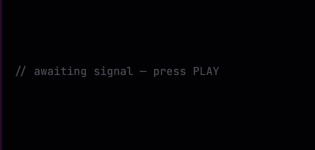
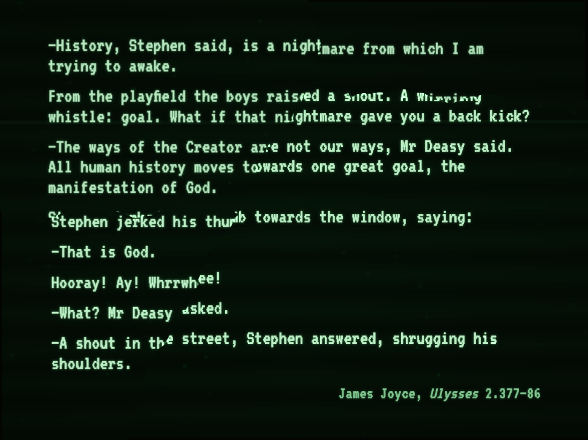

ZANKYŌ 残響


—History, Stephen said, is a nightmare from which I am trying to awake.
From the playfield the boys raised a shout. A whirring whistle: goal. What if that nightmare gave you a back kick?
—The ways of the Creator are not our ways, Mr Deasy said. All human history moves towards one great goal, the manifestation of God.
Stephen jerked his thumb towards the window, saying:
—That is God.
Hooray! Ay! Whrrwhee!
—What? Mr Deasy asked.
—A shout in the street, Stephen answered, shrugging his shoulders.
00
75 %
Hirajoshi · D
haunted · derelict · neon-rust
seed 3042
一二三四五
活動 · ACTIVITYVFD-08
Press PLAY. Events appear here as they fire.
卓 · CONSOLE
残響-3042 · MUNICIPAL SKY HEAVY INDUSTRIES · 製造番号 3042-0117
2.1.0-rc.119·676467·2026-10-02 22:59 UTC